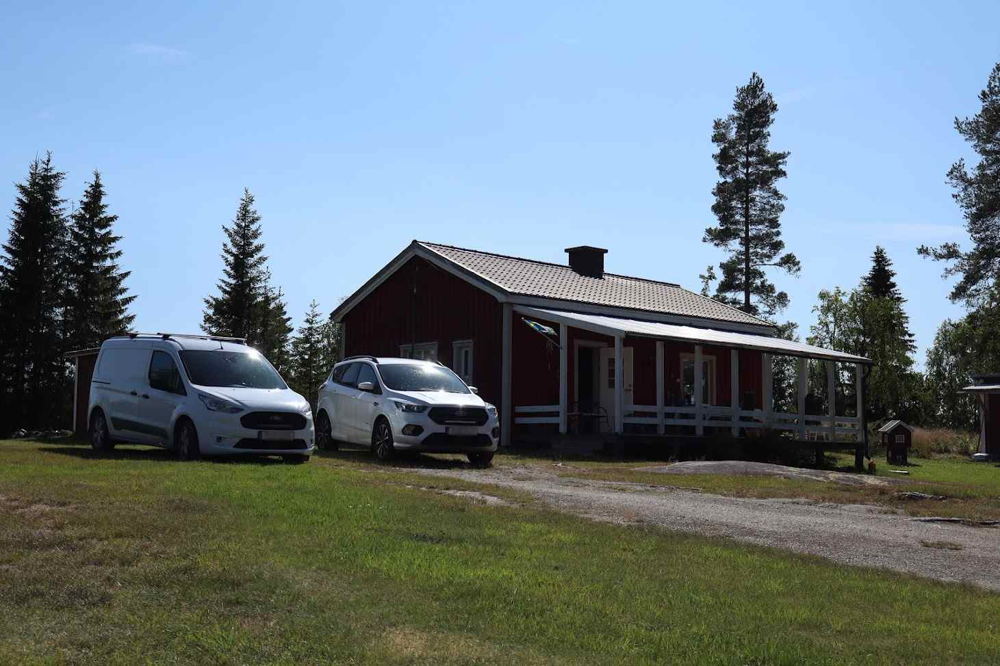

Ash's Summer
How has Ash's summer been? Scroll to find out!
The most boring thing I did this summer was trying to get discord.py 0.16.7 to work, but I've also done something fun, and that was going to Stockholm.
I have not swam anything this summer. My body has been dry, and that felt good. I do not like to submerge my body in water, you see.
The best thing I ate this summer was tortellini gratain and I would like to compare the taste of it with heaven. It was so good. Here is the recipe if you want to make it yourself.
I have not watched any TV-series this summer, because I do not like watching TV-series. The closest I've come to actually watching anything was when I watched one episode of The Walking Dead, but I personally wouldn't count that.
A person I met this summer was my friend Lukas, and I would like to cite him by saying: "Trump is an idiot".
One day this summer I visited Mårseleforsarna. It was very pretty there, and you can see how it looked like there in the above image.
I would like to summarize my summer with these three words: hot, sweaty and nice.
A pretty okay symmer, but I have really looked forward to starting school again and I think this year at NTI will be interesting and I think I will learn a lot.
